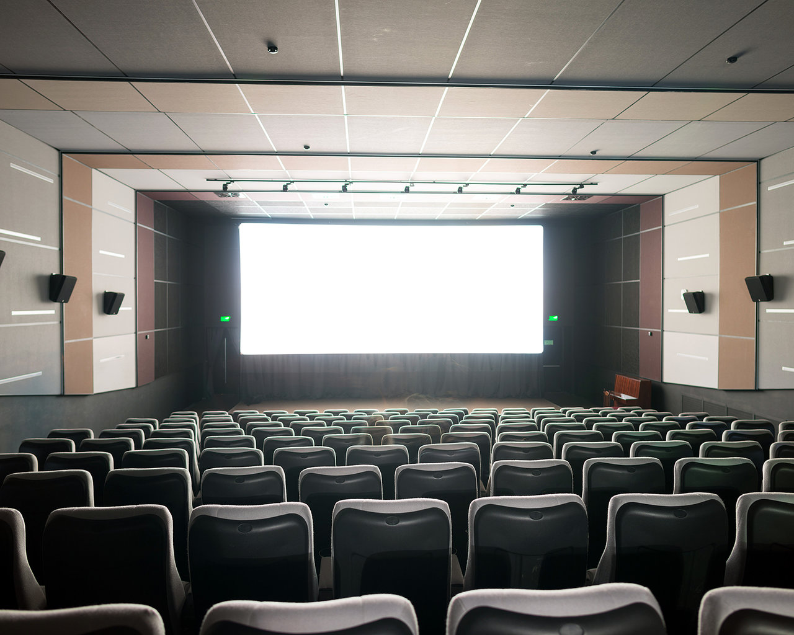
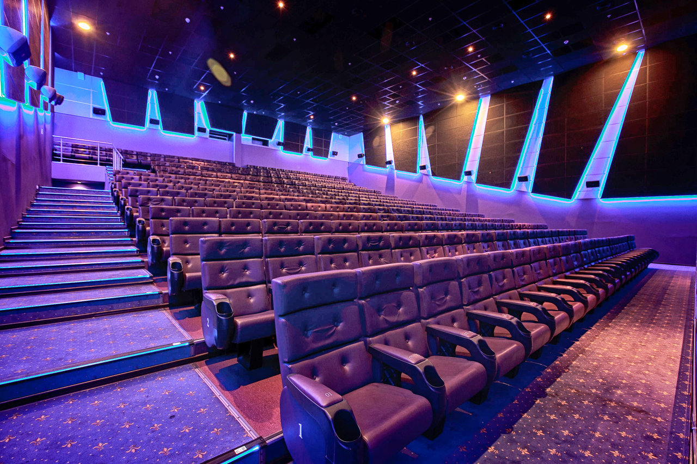
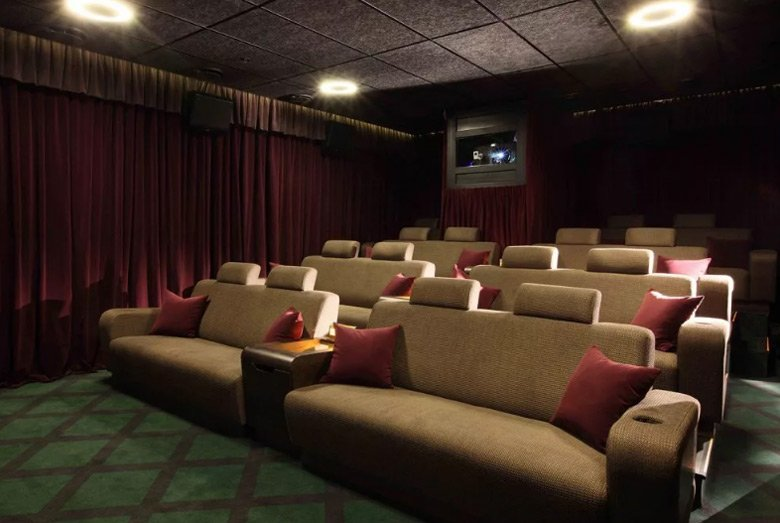
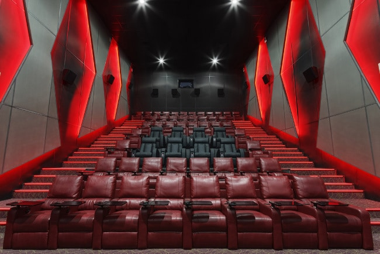
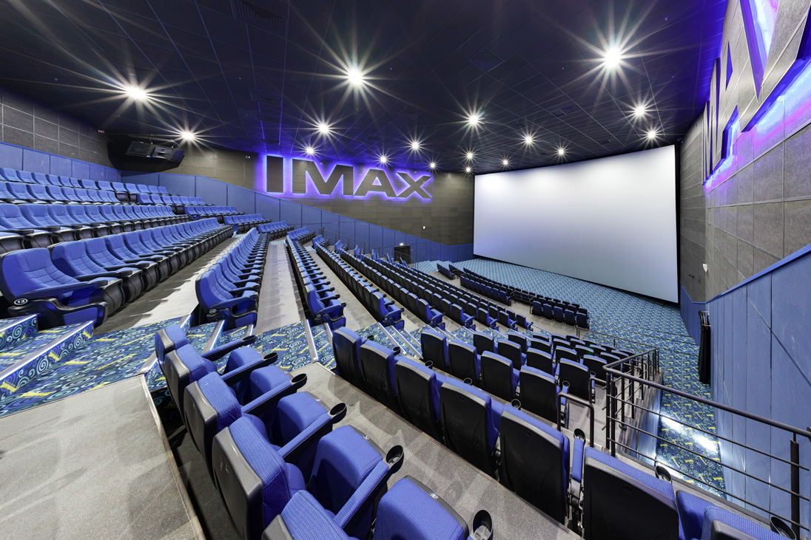
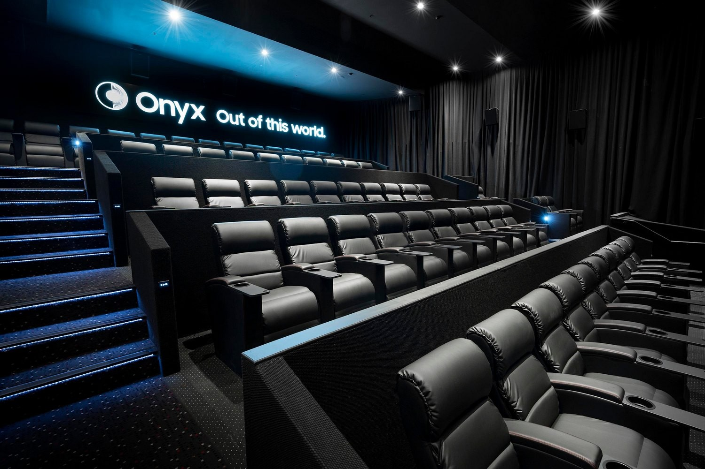

Фотоальбом

Зал №1
Оснащен великолепными аудиосистемой, imax экраном. Экран повышенной четкости высотой 12,4 м и длиной 22,5 м вогнутой формы. Что делает изображение более ярким, контрастным с реалистичным эффектом присутствия.Цифровая звуковая система из 44 динамиков, расположенных в разных точках по периметру зала. Мощные колонки перемещают звук вокруг зрителя с одинаковым уровнем громкости.

Зал №2
Оснащен удобными креслами. Цифровая звуковая система из 44 динамиков, расположенных в разных точках по периметру зала. Мощные колонки перемещают звук вокруг зрителя с одинаковым уровнем громкости.

Зал №3
Небольшой зал, подходит для семейных просмотров или для компании. В этом зле стоя диванчики, что создает атмосферу домашнего просмотра. Оснащен цифровой звуковой системой из 20 динамиков, для такого небольшого зала это отличный звук. Также в зале стоит экран с повышенной четкостью изображеия.

Зал №4
Классический небольшой зал для комортного просмотра, с удобными кожанными креслами. Также с кресла обладают выдвижными столиами. В этом зале вы сможете взть с собой еду и ни о чем не думать, совместить приятное с полезным.

Зал №5
Экран повышенной четкости высотой 12,4 м и длиной 22,5 м вогнутой формы. Что делает изображение более ярким, контрастным с реалистичным эффектом присутствия.Цифровая звуковая система из 44 динамиков, расположенных в разных точках по периметру зала. Мощные колонки перемещают звук вокруг зрителя с одинаковым уровнем громкости. Стадионное расположение кресел повышенной комфортности, помещающее зрителей в центр происходящего, вне зависимости от места в зале.

Зал №6
Зал №6 оснащен удобнейшими креслами, их идельным расположением, что не видно спереди сидящих людей. В этом зале вы погрузитесь в полноценную обстановку фильма. Оснащен цифровой звуковой системой из 33 динамиков, для такого небольшого зала это отличный звук. Также в зале стоит экран с повышенной четкостью изображеия.